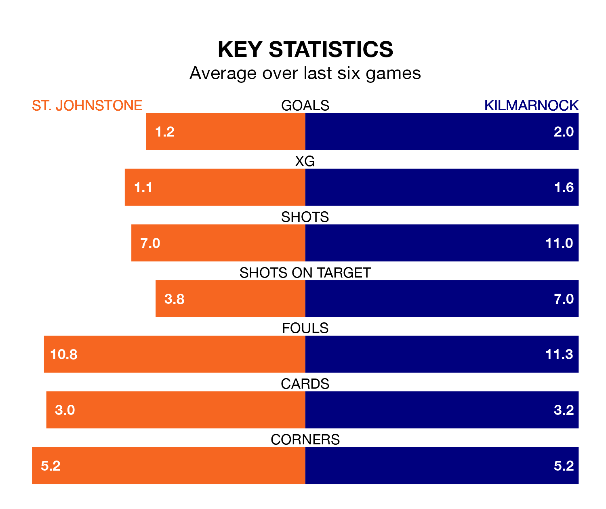

Struggling St. Johnstone face Kilmarnock at McDiarmid Park on Saturday looking to build on a win in their last league outing.
After securing all three points with a 2-1 victory over Hibernian on April 6, the Saints sit 10th in the Premiership.
They travel to play a Kilmarnock side fourth in the standings, who also won their last match, 1-0 against Ross County.
In the last 10 years, St. Johnstone and Kilmarnock have played each other on 28 occasions. They won 12 each, and they drew four times.
On average, the Saints scored 0.9 goals and Killies 1.1 in those matches.
Their last meeting was on December 23, when Kilmarnock won 2-1 at home.
In Will Dennis, Kilmarnock can rely on one of the league's safest pair of hands. He has kept 11 clean sheets in his 31 appearances this season in the Premiership.
In St. Johnstone's net, Dimitar Mitov has eight clean sheets in 32 games. He has conceded a goal every 72 minutes, 40% more often than the 98 minutes between goals for Dennis.
With 24 goals in 32 games so far this season, the Saints are the league's second-lowest scorers with 0.8 goals per game. And they are conceding more than average, letting in 44 goals at a rate of 1.4 per game.
Killies, meanwhile, are average scorers, with 1.3 goals per game. They have conceded 1.1 goals per game.
The hosts are in mixed form in the Premiership, with two wins and a draw from their last six games.
With three wins and two draws over that period, the away side's form is better – they have taken 11 points from 18, compared to St. Johnstone's seven.
Updated: 11:20 (UTC), 09/04/24